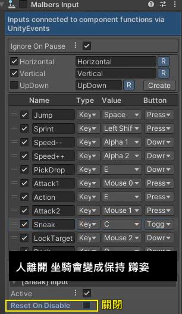

角色騎乘 \
角色 \ 座騎 \ 動作調整 \ UI安裝 \ 攝影機
1. 在動物上裝馬鞍 " Montura "元件
Assets/Malbers Animations/Horse AnimSet Pro
/4 - Prefabs/Montura.prefab
2. Moutura \ MountBase 設定 Moutura 為 Sprin 1 為父級
安裝一個 輸入騎車上馬之後的控制器
3. 關閉攝影機目標" CAMREA TARGET " 關閉 Malber Input
要實現 上馬用
FREE LOOK MOUN下馬時候 使用
FREE LOOK MAIN 攝影機
選擇使用 角色身上
Riding System套件 裡面的
Events事件系統 修改上下馬時機
4. 讓 腳色 在馬背上 不會隨著 脊椎的中心點 前後晃動
在人物身上裝上騎馬 元件 < RIder >
安裝騎馬元件 就必需要在animator 新增一組 layer
觸發播放動畫 ,元件安裝的時候會有一個自動按鈕
座騎 \
座騎馬鞍 Moutura \
互動UI \ 設定

角色騎乘
\
角色 \
座騎 \ 動作調整 \ UI安裝 \
攝影機
HOOK 設定
新增 Mount UI 互動介面
4. 坐姿的調整
調整 Wolf MountTrigers Adjustment.asset 文件
1
Montura \Mount Trigger 掛上Wolf MountTrigers Adjustment.asset 文件
2
Montura \ Wolf MountTrigers Adjustment.asset 文件 調整上馬高度
文件位置 Assets/Malbers Animations/Animals Packs/01 Forest Pack/_Forest Pack (AC)/Wolf AC/4 - Rideable (Requires HAP)/Wolf MountTrigers Adjustment.asset
3.
Montura \ Mount Base \
MountPoint 騎馬位置調整